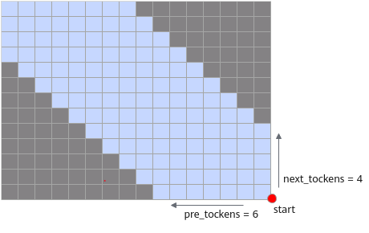

已废弃（Deprecated）
本页属于 静态图（GRAPH_MODE）实现 章节，已标记为废弃。新特性优先在「r2.0.0 动态图实现」章节演进，请优先查阅动态图相关文档。
其它训练特性

在大规模的深度学习模型训练中，会遇到诸多挑战，如：内存限制、计算资源的有效利用、分布式训练中的同步问题等，需要使用训练优化算法来提高训练效率、加速收敛速度以及改善最终模型性能。
MindSpore Transformers 提供了梯度累积、梯度裁剪等训练优化算法，可供开发者进行训练时使用。
梯度累积
概述
MindSpore 在 2.1.1 之后的版本中增加了 mindspore.nn.wrap.cell_wrapper.GradAccumulationCell 这一梯度累积实现接口，通过拆分 MiniBatch 的形式提供了梯度累加的能力。MindSpore Transformers 将其封装进了统一的训练流程，通过 yaml 配置进行使能。关于梯度累积的原理和框架侧的能力可以参考 MindSpore 文档：梯度累加。
配置与使用
YAML 参数配置
用户在需要开启梯度累积的场景下，只需在配置文件中的 runner_config 项下配置 gradient_accumulation_steps 项，设置为所需的梯度累积步数即可：
# runner config
runner_config:
...
gradient_accumulation_steps: 4
...
主要配置参数介绍
参数 |
描述 |
取值说明 |
|---|---|---|
gradient_accumulation_steps |
在执行反向传播前，累积梯度的步数。 |
(int, 必选) - 默认值： |
其他方式使用梯度累积
除配置文件外，当采用 run_mindformer.py 脚本启动时，可指定 --gradient_accumulation_steps 入参来使用梯度累积功能。
梯度累积使用限制
开启梯度累积会增大内存开销，请注意内存管理，防止发生内存溢出（OOM）。
由于
GradAccumulationCell的实现依赖并行特性，梯度累积当前仅支持在半自动并行模式下使用；此外，在 pipeline 并行场景下，梯度累积含义与 micro_batch 相同，将不会生效，请配置
micro_batch_num项以增大训练 batch_size。
梯度裁剪
概述
梯度裁剪算法可以避免反向梯度过大导致的梯度爆炸，从而帮助模型训练更稳定地收敛。
配置与使用
YAML 参数配置
在 MindSpore Transformers 中，默认的训练流程 MFTrainOneStepCell 中集成了梯度裁剪逻辑。
可使用如下示例，以开启梯度裁剪：
# wrapper cell config
runner_wrapper:
type: MFTrainOneStepCell
...
use_clip_grad: True
max_grad_norm: 1.0
...
主要配置参数介绍
参数 |
描述 |
取值说明 |
|---|---|---|
use_clip_grad |
控制在训练过程中是否开启梯度裁剪。 |
(bool, 可选) - 默认值： |
max_grad_norm |
控制梯度裁剪的最大 norm 值。 |
(float, 可选) - 默认值： |
GroupedMatmul
概述
针对MoE单卡多专家计算，存在细碎的专家计算操作与通信，通过GroupedMatmul算子对多专家计算进行合并，提升MoE单卡多专家训练性能。通过调用GroupedMatmul算子，对多个专家计算进行融合达到加速效果。
token_dispatcher可以根据计算后的路由策略，将不同的 token（输入的子词/子单元）路由分派给不同的专家（Expert）、计算单元或分支进行独立处理。该模块主要由all_to_all通信构成。
配置与使用
YAML 参数配置
用户在需要MoE开启GroupedMatmul的场景下，只需在配置文件中的 moe_config 项下配置 use_gmm 项，设置为True。如果需要使用token_permute融合算子，配置use_fused_ops_permute为True：
moe_config:
...
use_gmm: True
use_fused_ops_permute: True
...
FAQ
使用GroupedMatmul融合算子，在负载不均衡时可能会出现某张卡上的专家未被分配任何token的情况，导致程序报错。报错如下：
ValueError: For primitive[Reshape]， the accumulate of x_shape must be equal to out_shape, but got x_shape: [const vector]{}, and output_shape: [const vector]{0, hiddensize}
此时，可以配置enable_gmm_safe_tokens: True，保证每个专家至少分配1个tokens，避免程序报错。
moe_config:
...
enable_gmm_safe_tokens: True
...
MoE DropRate 打印
概述
在使用MoE（Mixture of Experts）容量方案进行模型训练时，为了提高效率和性能，系统可能会对某些token执行drop操作。通过启用 DropRate 打印功能，用户可以在训练过程中实时监控这些drop操作的发生率，从而更好地理解模型的行为，并据此调整训练策略。此功能允许用户在训练过程中查看每一层的 DropRate 情况。DropRate 是指在特定层中被drop掉的token的比例。通过观察 DropRate 的变化趋势，可以帮助用户评估当前的训练参数设置是否合理，以及模型是否有效地利用了专家资源。
配置与使用
YAML 参数配置
用户要启用 DropRate 打印功能，需在配置文件中的 moe_config 项下配置 callback_moe_droprate 项，设置为True，在callback部分添加MoEDropRateCallback配置项，并设置模型相关参数expert_num、capacity_factor、num_layers、mtp_depth。示例：
moe_config:
...
callback_moe_droprate: True
...
callback:
...
- type: MoEDropRateCallback
expert_num: 4
capacity_factor: 1.5
num_layers: 8
mtp_depth: 1
...
主要配置参数介绍
参数 |
描述 |
取值说明 |
|---|---|---|
callback_moe_droprate |
是否在callback中打印MoE DropRate。 |
(bool, 可选) - 默认值： |
expert_num |
专家数量。 |
(int, 必选) - 默认值： |
capacity_factor |
容量因子。 |
(float, 必选) - 默认值： |
num_layers |
模型层数。 |
(int, 必选) - 默认值： |
mtp_depth |
mtp层层数。 |
(int, 必选) - 默认值： |
RoPE融合算子
概述
网络中使用RoPE（Rotary Position Embedding）作为位置编码时，可以启用该融合算子提升整网性能。该功能提供RoPE的融合算子实现，提升整网性能。算子的接口可参考： mindspore.ops.rotary_position_embedding。
配置与使用
YAML 参数配置
用户需要使用rotary_position_embedding融合算子，需在配置文件中的 model_config 项下配置 use_fused_rope 项，设置为True。示例：
model_config:
...
use_fused_rope: True
...
SwiGLU融合算子
概述
网络中使用SwiGLU作为激活函数时可以启用该融合算子提升整网性能。该功能提供SwiGLU的融合算子实现，提升整网性能。算子的功能可参考： mindspore.ops.swiglu。
配置与使用
YAML 参数配置
用户需要使用SwiGLU融合算子，需在配置文件中的 model_config 项下配置 use_fused_swiglu 项，设置为True。示例：
model_config:
...
use_fused_swiglu: True
...
CPU绑核配置
概述
MindSpore提供线程级CPU绑核功能，允许给MindSpore的主要模块（主线程、pynative、runtime、minddata）分配特定的CPU核，防止MindSpore线程抢占CPU导致性能不稳定的情况。
配置与使用
YAML 参数配置
context字段下有两处可以配置CPU亲和度。分别是affinity_cpu_list与affinity_config，affinity_cpu_list已合并至affinity_config，因此不做赘述。他们同时配置时以affinity_config为准。
在context字段的affinity_config字段中写入配置项，affinity_config及其子项都是可选的。也支持传入一个以“.json”结尾的字符串，将JSON配置文件传给MindSpore的接口。详情参考 mindspore.runtime.set_cpu_affinity。以下是一个两卡示例，分别以自定义配置项和传入JSON文件方式做绑定，两者达到相同的绑定效果（device0的main线程绑定CPU0和CPU1，minddata线程绑定CPU10和CPU11；device1的main线程绑定CPU20和CPU21，minddata线程绑定CPU30和CPU31）：
context:
...
affinity_config:
device_0:
affinity_cpu_list: ["0-3", "8-11"]
module_to_cpu_dict:
main: [0, 1]
minddata: [6, 7]
device_1:
affinity_cpu_list: ["20-23", "28-31"]
module_to_cpu_dict:
main: [0, 1]
minddata: [6, 7]
...
# 或者传入JSON文件路径
context:
...
affinity_config: "path_to_file.json"
...
JSON配置文件示例如下，详细配置可参考 使用 JSON 统一配置 CPU/NUMA 亲和：
{
"bind_config": {
"bind_cpu_mode": "cpu"
},
"bind_cpu": {
"device0": {
"main": "0-1",
"minddata": "10-11"
},
"device1": {
"main": "20-21",
"minddata": "30-31"
}
}
}
在 JSON 文件中， CPU 的配置方式使用 绝对 CPU ID ，例如 JSON 中
"main": "10-12"表示直接绑定到物理 CPU ID 10、11、12；自定义配置（affinity_cpu_list+module_to_cpu_dict）使用 绝对CPU范围段 + 相对索引机制 ，affinity_cpu_list定义可用范围（绝对 ID），module_to_cpu_dict在该范围内使用索引，例如affinity_cpu_list: ["10-20"]，module_to_cpu_dict: {main: [0, 1, 2]}表示在范围 10-20 中选择索引 0、1、2，即绑定到物理 CPU ID 10、11、12。
主要配置参数介绍
参数 |
描述 |
取值说明 |
|---|---|---|
device_X |
需要配置的设备 |
将 |
affinity_cpu_list |
自定义指定本进程的绑核CPU范围。传入列表需要为 |
(list, 可选) - 默认值： |
module_to_cpu_dict |
自定义指定的绑核策略。传入字典的key需要为模块名称字符串，目前支持传入 |
(dict, 可选) - 默认值： |
位置编码
概述
位置编码是为Transformer架构引入序列顺序信息的关键机制。在MindSpore Transformers中，位置编码通过 position_embedding_type 参数进行配置，支持多种主流的位置编码方案，以增强模型对token位置的感知能力。具体支持的编码类型包括：
RoPE（Rotary Position Embedding）：通过旋转矩阵编码位置信息，具有良好的外推性。
YaRN：改进的RoPE变体，能更好地处理长序列。
可学习绝对位置编码：将位置信息作为可训练参数。
无位置编码：不使用显式位置编码。
配置与使用
YAML 参数配置
用户在配置文件中的 model_config 项下配置 position_embedding_type 项，设置位置编码。当前 position_embedding_type 的可选值和含义如下所示：
‘none’：所有层都不使用位置编码。
‘rope’：所有层都使用 RoPE 位置编码。如果需要实现 RoPE 层与无位置编码层的交替模式，可以将
nope_layer_interval参数配置为正整数。nope_layer_interval表示相邻无位置编码层之间间隔有编码层的数量。‘yarn’：所有层都使用 YaRN 位置编码。
‘learned_absolute’：所有层都使用可学习绝对位置编码。
示例：
所有层都使用 YaRN 位置编码:
model_config: ... position_embedding_type: 'yarn' ...
每两层无位置编码层之间插入四层 RoPE 位置编码层:
model_config: ... position_embedding_type: 'rope' nope_layer_interval: 4 ...
SlidingWindowAttention
概述
SlidingWindowAttention是一种稀疏注意力机制，通过限制每个token仅关注局部窗口内的其他token，解决标准Transformer模型计算复杂度随序列长度二次增长的问题。其核心思想是将注意力范围从全局缩小到固定窗口大小。
配置与使用
YAML 参数配置
用户在使用SlidingWindowAttention模块时，需要配置文件中的 model_config 项下配置window_size 项和window_attn_skip_freq 项。
window_size类型为Tuple[int, int]，此参数代表每个注意力操作中，一个token能够“关注”到的前后邻近token的数量范围；window_size[0]代表向前“关注”的token数量，window_size[1]代表向后“关注”的token数量。任何一个设置成-1，表示向前或向后“关注”的token数量无限制。默认起点为右下角，如下图所示：

window_attn_skip_freq类型为Union[int, List[int]]，用于设定滑动窗口注意力（SWA）层中全注意力（Full Attention）层的插入频率。支持两种配置模式：
等间隔模式：指定一个整数
N，以(N-1) : 1的比例插入全注意力层。即每经过N − 1个滑动窗口注意力层后，插入一个全注意力层。自定义模式：通过布尔值列表自由定义注意力层的交替顺序。例如：
[1, 1, 1, 1, 0, 0, 0]其中1代表滑动窗口注意力层，0代表全注意力层。该列表按顺序决定网络中每一层的类型。
配置示例：
model_config:
...
window_size: [10, 0] # 每个token向前关注10个tokens，向后不关注
window_attn_skip_freq: 2 # 每2层有一个全注意力层
...